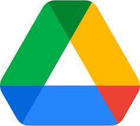
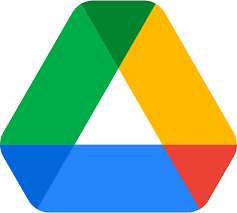
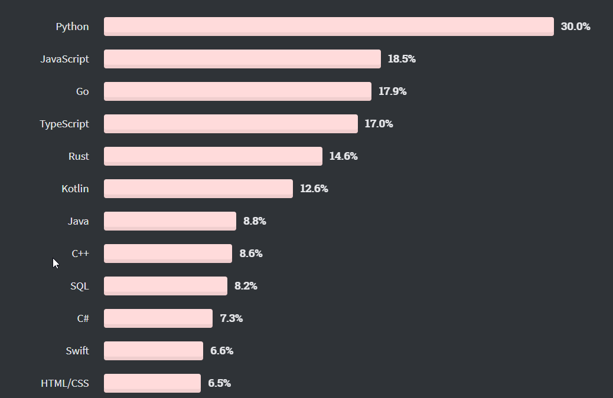
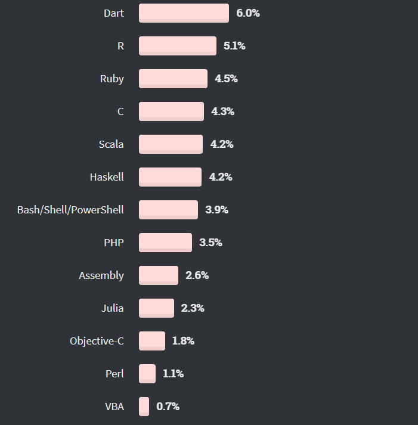

zawód: programista
Za co odpowiadają programiści?


 



Informatyka (niem. informatik, ang. computer science, computing, computer engineering, IT, ICT)[1] – nauka ścisła oraz techniczna zajmująca się przetwarzaniem informacji, w tym również technologiami przetwarzania informacji oraz technologiami wytwarzania systemów przetwarzających informacje.
Informatyka teoretyczna
- Algorytmy i struktury danych
- Złożoność obliczeniowa
- Teoria informacji
- Teoria języków programowania
Informatyka techniczna
- Układy logiczne
- Architektura komputerów
- Przetwarzanie równoległe i rozproszone
- Sieci komputerowe
- Systemy operacyjne
Informatyka praktyczna
- Grafika komputerowa
- Inżynieria oprogramowania
- Cyber-bezpieczeństwo
- Kryptologia
- Bazy danych
Systemy i technologie komputerowe
- Sztuczna inteligencja
- Gry komputerowe
- Symulatory
- Interakcje człowiek-komputer
- Technologie webowe
- Technologie mobilne
Informatyka stosowana
- Informatyka w nauce (biologia, chemia, ...)
- Geoinformatyka
- Informatyka medyczna
- Informatyka przemysłowa
- Informatyka ekonomiczna
Informatyka praktyczna
Systemy i technologie komputerowe
Kobiety w informatyce

Języki programowania


Wynik ankiety StackOverflow: "most wanted languages", 2020.